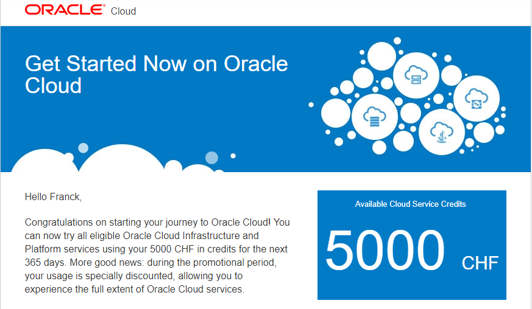
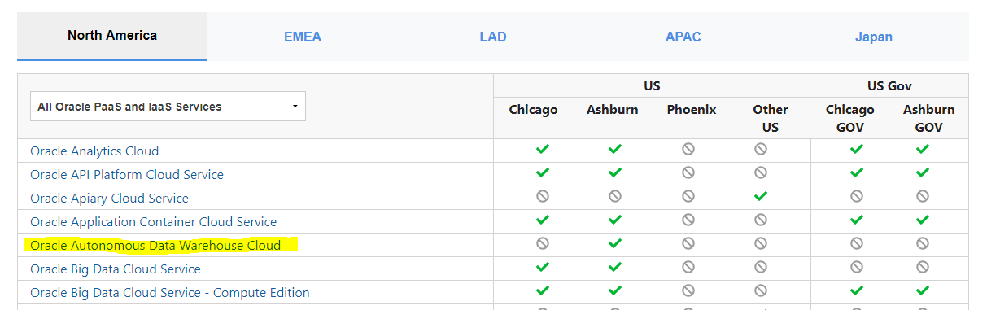
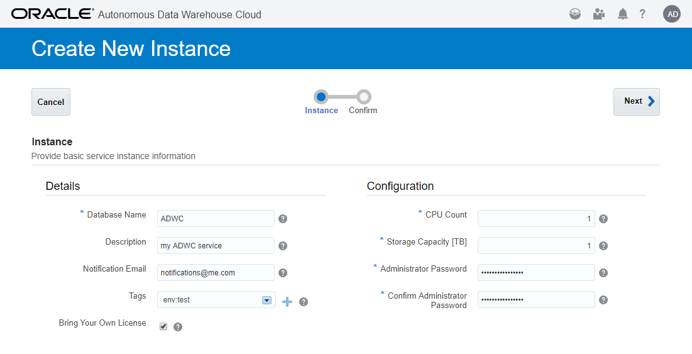
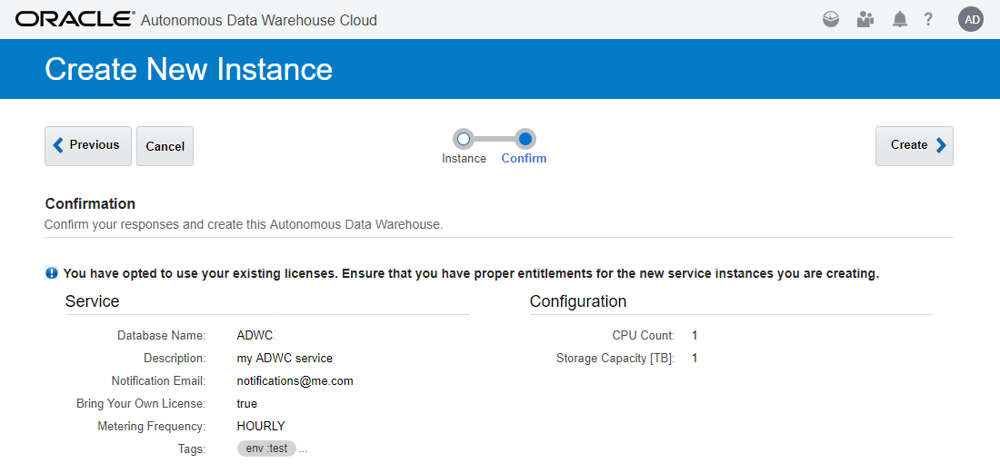
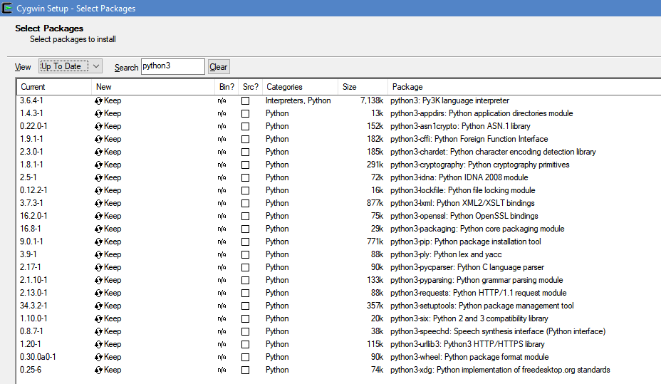

This was first published on https://www.dbi-services.com/blog/adwc-creation-of-autonomous-database-cloud-service/ (2018-05-01)
Republishing here for new followers. The content is related to the versions available at the publication date.
.
You want to try the Autonomous Data Warehouse Cloud Service? That’s easy. Here is a Step-by-Step.

First, you need Cloud Credits. You may have bought them (any recent negotiation with Oracle Sales, even for on-premises, involves some Cloud Credits). You can have a free trial with 300$ Cloud Credits available for 1 month. To get another month, you need a different e-mail address and different Credit Card number (not charged). It is quite easy to have different e-mail addresses and your bank may provide virtual credit card where the number changes each time. Or you may have the 5000$ Cloud Credits available for 1 year from the Education program. I got those thanks to ACE Director program.
Update 01-MAY-2018 – There’s also the 500$ credits from the “white glove” program – you can ask to your Sales representative
In all cases you will be able to test the service without spending too much credits because:
The first generation of Oracle Cloud, is now called ‘OCI Classic’, and you distinguish it when connecting as the Sign-In page mentions ‘Traditional Cloud Account’. You cannot access to ADWC with this account.
You need an access to the OCI (Oracle Cloud Infrastructure – the version 2 of Oracle Cloud).
If, when Sign-In, you are welcomed by this guy looking at his phone, you are at the right place. I’m always curious about how they choose an image for a page used every day and for several years. The oracle.com login page is easy with the headquarters blurry shot. For the OCI account, they choose the “Man On Smart Phone – Young Business Man Texting In Airport – Casual Urban Professional Businessman Using Smartphone App Smiling Happy Inside Office Building Or Airport” from the Adobe image stock.

For the moment, the ADWC service is available only in the Ashburn Cloud Center. Not yet in Europe (but planned for Frankfurt). You can see the regions here: https://cloud.oracle.com/data-regions. Then, when you receive your access to the Oracle Cloud Services, chose the Ashburn Data Center.
Update 01-MAY-2018 – It seems that the service is available in Frankfurt.
 
The instance creation is easy and fast. It will create a Pluggable Database (PDB) in the Oracle Cloud CDB. You provide a name, and ADMIN password (be careful, rule is at least 12 characters) which is the password you’ll use to connect as the ADMIN user. You can change it later and add new users. The Shape is different from the DBaaS here. You define the number of threads you want to use (it actually sets the CPU_COUNT for the PDB) and the size of PDB datafiles. You can change both later with Scale Up/Down.
You can also create an ADWC service from the command line. I’ll show how to install and use PSM, the PaaS Service Manager Command Line Interface). Rodrigo Jorge has a nice description for DBaaS on his blog.
So, you download PSM:
curl -X GET -u my.cloud.account@me.com:MyP@ssw0rd -H X-ID-TENANT-NAME:idcs-31bbd63c3cb9466cb8a96f627b6b6116 https://psm.us.oraclecloud.com/paas/core/api/v1.1/cli/idcs-31bbd63c3cb9466cb8a96f627b6b6116/client -o psmcli.zip
% Total % Received % Xferd Average Speed Time Time Time Current
Dload Upload Total Spent Left Speed
0 0 0 0 0 0 0 0 --:--:-- 0:00:01 --:--:-- 0
100 86945 0 86945 0 0 16806 0 --:--:-- 0:00:05 --:--:-- 23820
The user:password are those you use in the account Sign-In.
The ‘Tenant Name’, you get it from the URL of this Man On Smart Phone Sign-in web page. You will see it also mentioned later as ‘Identity domain’ (like in OCI-Classic). If you have a doubt, create the service from the web console, click on it and you will see the Tenant Name.

So, you have a zip file and do not unzip it. It is a Python 3 module and you install it with ‘pip3’. You can do that in any OS.
I have the strange idea to run my laptop on Windows with Cygwin for command line stuff. Here are the python3 packages I have here.
Here is the installation of PDM:
pip3 install -U psmcli.zip
Processing ./psmcli.zip
...
And now the nice thing is that you will configure once your credentials with ‘psm setup’. You provide the user, password and tenant name (which is called ‘identity domain’ here):
$ psm setup
Username: my.cloud.account@me.com
Password: MyP@ssw0rd
Retype Password: MyP@ssw0rd
Identity domain: idcs-31bbd63c3cb9466cb8a96f627b6b6116
Region [us]:
Output format [short]:
Use OAuth? [n]:
----------------------------------------------------
'psm setup' was successful. Available services are:
o ADWC : Oracle Autonomous Data Warehouse Cloud
o ADWCP : Oracle Autonomous Data Warehouse Cloud Platform
o ANALYTICS : Oracle Analytics Cloud
o APICS : Oracle API Platform Cloud Service
o APICatalog : Oracle API Catalog Service
...
ADWC is on the list. You are ready to manage ADWC instances, such as create one:
$ psm adwc create-service -c - <<<' {
"serviceName": "ADWCx",
"adminPassword": "Ach1z00dAch1",
"numCpus": "1",
"storageCapacity": "1",
"serviceLevel": "PAAS",
"serviceVersion": "18.1.1",
"managedSystemType": "oracle",
"enableNotification": true,
"notificationEmail": "notifocations@me.com",
"isBYOL": true
} '
Message: Submitted job to create service [ADWCx] in domain [idcs-31bbd63c3cb9466cb8a96f627b6b6116].
Job ID: 25509908
We can check the status of job
$ psm adwc activities --service-name ADWC
Operation Type Status Start Time End Time
CREATE_SERVICE RUNNING 2018-04-28T19:57:31.056+0000 N/AAnd a few minutes later the service is there:
$ psm adwc activities --service-name ADWC
Operation Type Status Start Time End Time
CREATE_SERVICE SUCCEED 2018-04-28T19:57:31.056+0000 2018-04-28T19:59:51.900+0000We will see how to connect in a future post. Very easy from SQL Developer or SQLcl.
You can delete the service when you don’t need it anymore:
psm adwc delete-service --service-name ADWC
To save credits, you want an easy way to stop and start the service. That’s for tne next post as PSN requires a little hack there.
{kind=link}
{kind=link}
{kind=link}
{kind=link}
{kind=link}
{kind=link}
{kind=link}
{kind=link}